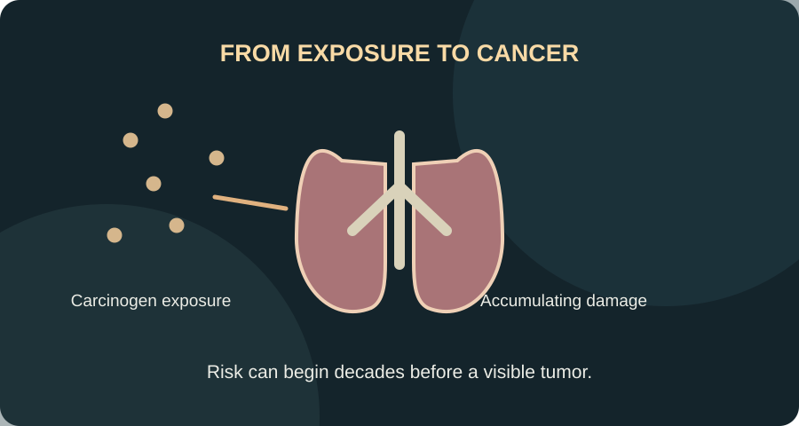

Two simultaneous stories in the 1950s
In the mid-1950s, researchers were building a convincing connection between cigarette smoking and lung cancer. Yet cigarette sales and advertising were also reaching extraordinary heights. Evidence and commercial enthusiasm were moving in opposite directions.
World War II had made cigarettes familiar to soldiers and civilians. Returning troops helped spread and normalize the habit. Tobacco companies then poured huge sums into marketing, selling not only cigarettes but also images of confidence, sophistication, relaxation, freedom, and masculinity.
Mukherjee shows how a health threat can become deeply established in society before its dangers are widely accepted.
Tobacco advertising becomes more sophisticated
Rather than speak to everyone in the same way, advertisers divided potential customers into groups: workers, women, immigrants, different ethnic communities, and even doctors. Each group received a message intended to make cigarettes seem desirable and appropriate.
Medical journals carried cigarette advertisements, and doctors could receive free samples at professional conferences. The promotion of particular brands by supposed medical authority made the product appear safe.
In 1955, the Marlboro Man became an extraordinarily successful advertising figure. The rugged cowboy image presented filtered cigarettes as masculine and reassuring, even while health concerns were growing.
The important issue is not merely that advertisements were persuasive. They helped turn widespread smoking into an apparently normal social habit.
The comforting illusion of filtered cigarettes
As concerns about tar and lung cancer increased, manufacturers promoted cigarette filters as if they offered meaningful protection. The marketing message shifted: perhaps cigarettes were not dangerous if consumers chose a supposedly safer version.
This could reassure worried smokers without requiring them to quit. The problem was that an advertised filter or a phrase such as milder did not establish that a cigarette eliminated the danger.
Mukherjee's story teaches a larger lesson about medicine: a safety claim requires evidence about actual health outcomes, not merely a plausible mechanism or reassuring packaging.
An emergency meeting at the Plaza Hotel (1953)
On December 28, 1953, leaders of major cigarette companies met at New York's Plaza Hotel. They were worried that accumulating research findings would eventually change public opinion.
The industry needed a coordinated response. Instead of conceding that smoking had become strongly linked to cancer, tobacco executives and their advisers prepared a public message designed to protect confidence in their products.
The result would appear in hundreds of newspapers in early 1954.
The advertisement called “A Frank Statement”
In 1954, tobacco companies circulated an advertisement presented as a candid message to cigarette smokers. Its actual strategy was much more complicated.
It minimized the strength of human evidence by directing attention toward animal experiments, suggested that statistics linking smoking with cancer were disputed, and emphasized that additional research was needed.
The implication was subtle: if scientists still had questions, perhaps consumers had no reason to change their behavior. But scientific uncertainty does not always mean that no action is justified. Researchers can be highly confident that an exposure is dangerous while still investigating precisely how it causes harm.
Three strategies for creating doubt
Mukherjee identifies a recognizable pattern in the tobacco response.
First, reframe evidence so that strong human studies seem like obscure laboratory speculation. Second, magnify disagreement among scientists even when their central findings are broadly consistent. Third, promise to support further research, making it appear that public action must wait until every conceivable question has been settled.
This is different from legitimate scientific skepticism. Good skepticism asks whether a claim survives better testing. Manufactured doubt uses the existence of unanswered questions to obscure conclusions already well supported.

Clarence Cook Little enters the controversy
The tobacco industry's research committee chose Clarence Cook Little, a geneticist and a former leader of the American Society for the Control of Cancer, as its director.
Little believed strongly that heredity explained susceptibility to cancer. He argued that smoking and lung cancer might occur together because of underlying inherited differences, rather than because cigarettes were a major cause.
Genes do matter in cancer. But Mukherjee shows how Little's preferred explanation was used to cast excessive doubt on epidemiological evidence of environmental harm.
The mistake was to treat a genetic predisposition and an environmental cause as mutually exclusive. An exposure can increase cancer risk even when some people are biologically more susceptible than others.
Correlation versus causation
Little emphasized a true scientific principle: correlation alone does not prove causation. If two things occur together, one does not necessarily cause the other.
For example, people may buy more cold drinks during summers when drowning deaths also rise. Cold drinks do not cause drowning; warmer weather contributes to both patterns.
But it would also be mistaken to conclude that no observational evidence can establish cause. Scientists must evaluate whether the association is strong, repeated, temporally sensible, biologically plausible, and supported by other kinds of investigation.
That is precisely the challenge smoking research created.
Why Robert Koch's rules were not enough
The nineteenth-century microbiologist Robert Koch established influential ways to show that a microorganism causes an infectious disease: identify an agent, isolate it, and demonstrate that it produces illness in another host.
Those rules were useful for certain infections, but smoking is not a single bacterium that can be isolated and passed from patient to patient. Lung cancer may emerge years after the original exposure, and carcinogenic damage does not necessarily leave one recoverable agent in the final tumor.
Demanding that a smoking-related cancer fulfill an infectious-disease model would create an impossible standard of proof.
Wynder and Graham test cigarette tar in animals
Ernst Wynder and Evarts Graham developed an experimental method for collecting tar from cigarettes and applying it to the skin of mice. Some exposed animals developed tumors.
The experiment was not identical to the way human beings inhale smoke. Critics pointed out that people do not paint concentrated cigarette tar onto their backs. That objection raised a real limitation about how animal findings translate to humans.
But the experiment also supplied independent biological evidence that constituents of cigarette smoke could produce malignant changes. In combination with human epidemiology, it strengthened the overall argument.
Bradford Hill proposes a broader approach to cause
Austin Bradford Hill argued that researchers studying chronic diseases needed to judge causality by looking at several forms of evidence together. No single test could settle every problem.
Mukherjee explains criteria such as strength, consistency, timing, dose-response, biological plausibility, coherence, and experimental support. Smoking satisfied many of these considerations: heavier and longer exposure increased risk, independent populations showed similar patterns, and related laboratory results were compatible with the human evidence.
The idea was not to convert a checklist into mathematical proof. It was to evaluate the total weight of evidence—similar to assembling many independent clues in a difficult investigation.

An easy example of a dose-response relationship
Suppose three hypothetical groups differ in smoking exposure: one never smokes, one smokes occasionally, and one smokes heavily for many years. If lung-cancer risk tends to increase across those groups, the result is a biological gradient, or dose-response pattern.
A gradient alone is not conclusive. But it becomes persuasive when accompanied by strong associations, consistency across studies, and an explanation that makes biological sense.
This is why researchers examined not only whether people smoked, but also how much and for how long.
Evarts Graham becomes his own patient (1957)
The chapter ends with a devastating human story. Evarts Graham, a famous lung surgeon who had helped establish the smoking–cancer connection, became ill in the winter of 1956–1957.
At first his symptoms resembled flu. Further investigation revealed advanced lung cancer, with disease spread to multiple sites. Graham had smoked for about fifty years before quitting several years earlier.
He showed X-rays to a colleague without identifying the patient. The colleague judged the disease inoperable. Graham then revealed that the images were his own.
The “thief” and Graham's death
Graham described the cancer as something that had arrived unexpectedly, like a thief entering at night. The title captures the way a malignancy can grow silently for years before symptoms reveal it.
He received treatment, but his disease was too widespread. Graham died on February 26, 1957, aged seventy-four. By his request, his body was donated for anatomical study.
The tragedy is particularly painful because he had helped uncover the very hazard that contributed to his illness. Personal insight did not erase decades of earlier exposure.
The need for public warning, not just academic debate
Before his death, Graham argued that doctors' findings would accomplish only so much if cigarette advertising continued unchallenged. He called for a clear statement from American public-health authorities.
His point was political as well as medical. Researchers could produce convincing numbers, but companies were spending enormous resources to protect the behavior that created the risk. Public action would require more than articles in scientific journals.
Important terms and chapter takeaway
| Term | Easy explanation |
|---|---|
| Causation | An exposure contributes to producing an outcome |
| Correlation | Two variables are associated, without necessarily proving one causes the other |
| Dose-response | Greater exposure is associated with greater effect or risk |
| Biological plausibility | An explanation is consistent with what is known about biology |
| Manufactured doubt | Using selective uncertainty to weaken public acceptance of strong evidence |
| Carcinogenic tar | A mixture of compounds from tobacco smoke containing substances capable of promoting cancer |
The deepest message: discovering a dangerous exposure does not guarantee that society will respond. Powerful interests can sell uncertainty, confidence, and apparent safety even while the scientific case against a product grows stronger. Graham's story restores the human cost to a debate that could otherwise seem abstract.